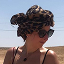
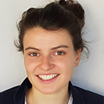
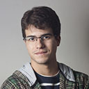
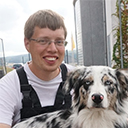

Organization committee
Write us
Cécile Fossé
PhD student at Ben Gurion University of the Negev, Israel and at University of Evora, Portugal within the MSCA-ITN Project ED-ARCHMAT specialised in provenance and technology of inscribed documents on clay. Currently working on study the administrative networks of Western Asia from the 2nd to the 1st millennium BCE.

Louise Chassouant
PhD student at University of Avignon, France and at Sapienza University of Rome, Italy within the MSCA-ITN Project ED-ARCHMAT specialised in molecular and palynological characterization of organic resin. Currently working on studying the nature of amphorae contents from amphore dated back to the Roman time.
Roshan Paladugu
PhD student at University of Evora, Portugal and at Sapienza University of Rome, Italy within the MSCA-ITN Project ED-ARCHMAT specialised in application of stable isotopes for paleodiet and environmental reconstructions. Currently working on studying farming and animal husbandry practices due to environmental changes in Phoenician-Punic Portugal and Sardinia during 8th - 5th century B.C.E.

Sergio Lins
PhD Student at La Sapienza - Universitá di Roma and Ben-Gurion University of the Negev under the MSCA-ITN project ED-ARCHMAT. Works mostly with X-rays physics and software development.

Thomas Rose
PhD student at Ben-Gurion University of the Negev and La Sapienza - Universitá di Roma within the MSCA-ITN Project ED-ARCHMAT. Specialised in ancient copper smelting technologies and stable metal isotopes. Currently working on the earliest metallurgy in the Southern Levant.